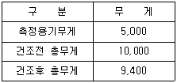
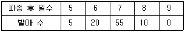

종자산업기사 (2012-08-26 기출문제)
1과목: 종자생산학 및 종자법규
1. 발아시험 시 재시험을 해야 할 경우가 아닌 것은?
- 시험결과가 독물질이나 진균, 세균의 번식으로 신빙성이 없을 때
- 시험조건이 잘못되었을 때
- 묘의 평가가 잘못되었을 때
- 반복간의 발아율이 최대 허용 범위 내에 있을 때
(정답률: 88%)

2. 수분측정결과 계측결과가 다음 표와 같을 때 이 시료의 수분함량은? (단위 : g)

- 6.0%
- 12.0%
- 18.0%
- 24.0%
(정답률: 80%)
3. 종자전염성 병의 방제법을 가장 옳게 설명한 것은?
- 파종 직전 종자처리로 완전 방제가 가능하다.
- 종자저장 중 방제로 모든 병해충을 방제할 수 있다.
- 종자수확 후 방제에 의하여 전염원을 완전히 제거할 수 있다.
- 종자수확 전 방제가 가장 중요하다.
(정답률: 64%)
4. 양배추의 채종포 관리방법에 관한 설명 중 틀린 것은?
- 저온감응을 충분히 받게 한다.
- 모구 저장 시 노화하지 않게 한다.
- 추대기의 생장을 억제한다.
- 질소비료의 효과가 적당하도록 시비한다.
(정답률: 75%)
5. 밀 배유세포벽의 주요 구성성분이 아닌 것은?
- Pentosan
- Cellulose
- Hemicellulose
- β-glucan
(정답률: 55%)
6. 다음 중 발아 시 광 조건과 무관한 불감수성 종자는?
- 양파
- 상추
- 담배
- 옥수수
(정답률: 64%)
7. 다음 중 종자관리사의 자격취소에 해당하는 위반사항이 아닌 것은?
- 종자보증과 관련하여 형의 선고를 받은 경우
- 종자관리사 자격과 관련하여 1회 이중 취업을 한 경우
- 자격정지 처분을 받은 후 자격정지 처분기간 내에 자격증을 사용한 경우
- 자격정지 처분기간 종료 후 3년 이내에 자격정지처분에 해당하는 행위를 한 경우
(정답률: 73%)
8. 다음 중 수중에서 전혀 발아하지 않는 것은?
- 밀
- 당근
- 셀러리
- 상추
(정답률: 79%)
9. 성숙모본(결구모본) 채종에 관한 설명으로 옳지 않은 것은?
- 비용이 많이 든다.
- 엽근채류에서 이용된다.
- 보급종 증식에 주로 이용된다.
- 종자의 순도를 높일 수 있다.
(정답률: 31%)
10. 등숙기의 저온감응이 차대식물의 화아분화에 영향을 미칠 수 있는 것은?
- 무
- 가지
- 오이
- 상추
(정답률: 68%)
11. 다음 중 반드시 1개의 고유한 품종명칭을 가져야 하는 경우가 아닌 것은?
- 육성한 품종의 종자를 전량 외국에 수출하는 품종
- 품종목록에 등재하기 위해 신청하는 품종
- 품종보호를 받기 위해 출원하는 품종
- 종자를 생산·판매하기 위하여 신고하는 품종
(정답률: 72%)
12. 다음 중 녹체춘화형식물(green plant vernalization type)은?
- 양배추
- 완두
- 추파맥류
- 수박
(정답률: 80%)
13. 품종의 보호 요건과 관련이 없는 것은?
- 신규성
- 구별성
- 균일성
- 우수성
(정답률: 69%)
14. 우리나라에서 현재 배추의 일대교잡종 채종에 보편적으로 이용하는 유전적 특성은?
- 자가화합성
- 자가불화합성
- 교잡불화합성
- 웅성붙임성
(정답률: 87%)
15. 다음 중 고추 작물의 종자 보증유효기간은?
- 6개월
- 1년
- 1년 6개월
- 2년
(정답률: 61%)
16. 종자의 발아검사에 관한 내용으로 옳지 않은 것은?
- 치상재료로 샬레, 흡습지, 흙, 모래 등을 사용한다.
- 발아에 필요한 규정온도로부터 ±5℃의 변이만을 허용한다.
- 발아시험지는 병원균이 자라기 어려워야 한다.
- 치상재료는 적당한 투기성과 보수성이 있어야 한다.
(정답률: 62%)
17. 다음 중 종자의 수명에 가장 큰 영향을 미치는 것은?
- 종자의 수분함량
- 종자의 청결도
- 종자저장고의 온도
- 종자저장고의 밀폐도
(정답률: 80%)
18. 다음 배추과(십자화과)채소 중 자식약세 현상이 제일 가볍게 나타나는 작물은?
- 양배추
- 순무
- 서양유채
- 배추
(정답률: 69%)
19. 피토크롬(phytochrome)을 가장 잘 설명한 것은?
- 개화를 촉진하는 호르몬이다.
- 광을 수용하는 색소단백질이다.
- 광합성에 관여하는 색소 중의 하나이다.
- 호흡조절에 관여하는 단백질이다.
(정답률: 61%)
20. 다음 중 종자세에 영향을 미치는 요인이 아닌 것은?
- 종자의 충실도
- 종자의 기계적 손상 정도
- 종자의 퇴화 정도
- 종자의 소독약 처리 상태
(정답률: 71%)
2과목: 식물육종학
21. 이질배수체를 이용하는 육종법과 관계가 없는 것은?
- 형질전환을 통하여 이질배수체를 얻는 것이 일반적이다.
- 이종간 또는 이속간에서 각 특성을 공통으로 이용할 수 있다.
- 각 종 또는 속의 양친을 동질4배체로 하여 교배할 수도 있다.
- 종간 또는 속간잡종개체의 염색체를 배가한다.
(정답률: 32%)
22. 종자의 활력을 측정하는 테트라죠륨(TTC)법의 설명 중 옳지 않은 것은?
- 발아력이 있는 종자의 배는 적색으로 염색된다.
- 발아력이 없는 종자의 배는 청색으로 염색된다.
- 발아력이 쇠약한 종자의 배는 부분적으로 염색이 되지 않는 곳이 생긴다.
- 발아력이 쇠약한 종자의 배는 탈수소효소의 환원 반응이 약하다.
(정답률: 74%)
23. 영양번식 작물의 품종 개량시 고려하지 않아도 좋은 것은?
- 많은 변이의 수집
- 유전자의 호모화
- 번식력이 강할 것
- 우량한 개체의 선택
(정답률: 64%)
24. 농작물 품종퇴화의 원인 중에서 유전적인 퇴화에 해당되는 것으로만 짝지어진 것은?
- 병해발생, 자연교잡
- 자연교잡, 돌연변이
- 결실기의 불량환경, 병해발생
- 돌연변이, 결실기의 불량 환경
(정답률: 85%)
25. 배우자형 자가불화합성 작물에서 모두 불화합이 일어나는 조합은?
- S2S3 × S1S2
- S1S1 × S2S2
- S1S2 × S3S3
- S1S2 × S1S1
(정답률: 67%)
26. 영양번식작물의 무병주 생산에 가장 좋은 조직배양법은?
- 생장점배양
- 배배양
- 자방배양
- 배주배양
(정답률: 77%)
27. 다음 중 육종의 소재가 될 수 있는 변이는?
- 방황변이
- 장소변이
- 아조변이
- 일시적변이
(정답률: 80%)
28. 식물종간 근연관계를 염색체의 형태 관찰에 의하여 추정하는 방법은?
- 생산력 검정
- 후대 검정
- 핵형 분석
- 분리비 검정
(정답률: 63%)
29. 씨감자를 고랭지에 재배하는 주된 이유는?
- 자연교잡 방지
- 병리적 퇴화 방지
- 돌연변이 방지
- 유전적 퇴화 방지
(정답률: 72%)
30. 육종기술의 발달과 직접적으로 관계가 없는 것은?
- 1900년 Correns, Tschermak, De Vries 등에 의한 멘델 법칙의 재발견
- 인공교배에 의한 일대잡종 육종
- 배수체와 인위돌연변이에 의한 육종
- 품종의 특성과 형질
(정답률: 59%)
31. 게놈(genome)에 관한 설명으로 옳지 않은 것은?
- 같은 게놈이 배가된 것을 동질 배수체라 부른다.
- 동질 4배체를 교잡한 AAAA×aaaa의 F2에서 분리비는 35 : 1이 된다.
- 한 게놈 내에서 서로 같은 염색체만 존재한다.
- 호모(home)개체의 출현율은 배수성이 높을수록 후대에서 저하한다.
(정답률: 72%)
32. 타식성 식물 중 자웅이주식물로만 나열된 것은?
- 양배추, 구마, 삼
- 호프, 시금치, 메밀
- 아스파라거스, 호프, 삼
- 메밀, 클로버, 은행나무
(정답률: 62%)
33. 야생벼가 가지고 있는 병해충 저항성 유전자를 실용품종에 도입시키고자 할 때 가장 효과적인 육종방법은?
- 분리육종법
- 돌여변이 육종법
- 여고잡 육종법
- 잡종강세 육종법
(정답률: 74%)
34. 멘델(Mendel)이 발견 및 정리한 주요 유전법칙에 직접적으로 해당되지 않는 것은?
- 잡종강세 현상
- 우성과 열성
- 표현형과 유전자형
- 독립유전
(정답률: 73%)
35. 서양평지(Brassica napus)의 염색체 수와 게놈(genome)구성이 옳게 표기된 것은?
- n = 16, AABB
- n = 17, BBCC
- n = 18, AABB
- n = 19, AACC
(정답률: 64%)
36. 다음 중 이종게놈(異種 Genome)의 합성종인 것은?
- 순무
- 배추
- 양배추
- 겨자
(정답률: 43%)
37. 자식성 작물에서 가장 널리 쓰이는 분리육종법은?
- 순계분리법
- 계통분리법
- 모계선발법
- 영양계선발법
(정답률: 66%)
38. 아조변이에 대한 설명으로 옳지 않은 것은?
- 환경에 의한 일시적 변이이다.
- 체세포적인 변이이다.
- 과수류 육종에 적합하다.
- 감귤류에 자연변이가 많다.
(정답률: 64%)
39. 새로 발견된 변이형의 유전성 여부를 판단하는 방법은?
- 특성검정
- 후대검정
- 생산력 검정
- 상관관계의 이용
(정답률: 87%)
40. 다음 중 동질배수체는?
- 씨 없는 수박
- 게놈이 다른 종속간 잡종에 의한 신종
- 2종 이상의 genome이 배가된 것
- genome의 구성이 AABBCC인 것
(정답률: 74%)
3과목: 재배원론
41. 다음 중 밀을 춘화처리(春化處理)하여 추파성을 소거하는 방법은?
- 저온처리
- 고온처리
- 저온처리 후 고온처리
- 고온처리 후 광처리
(정답률: 53%)
42. 종자발아에는 호광성(好光性)종자와 혐광성(嫌光性)종자가 잇다. 다음 중 호광성 종자로만 조합된 것은?
- 토마토, 가지, 파
- 파, 호박, 오이
- 오이, 가지, 페튜니어
- 담배, 상추, 베고니아
(정답률: 82%)
43. 목적의 작물이 불량조건 때문에 중도에 실패하였을 때 다른 작물을 대파하여 유실될 비료분을 잘 이용하는 효과를 가진 작물은?
- 피복작물
- 녹비작물
- 포착작물
- 보육작물
(정답률: 48%)
44. 다음 중 낙과의 방지법이 아닌 것은?
- 환상박피
- 합리적 시비
- 수광상태의 향상
- 수분의 매조
(정답률: 61%)
45. 농학의 발전에 공헌한 사람과 그가 주창한 학설이 옳게 연결된 것은?
- Pasteur – 순계설
- Liebig - 무기영양설
- Johannsen - 병원균설
- De Vries – 부식설
(정답률: 87%)
46. 자식성작물인 것은?
- 밀
- 옥수수
- 호밀
- 양파
(정답률: 61%)
47. 버널리제이션의 재배적 이용에 관한 설명이 옳지 않은 것은?
- 증수효과가 있다.
- 춘파 맥류의 추파성화가 가능하다.
- 육종 연한을 단축시킬 수 있다.
- 화아분화를 촉진시켜 촉성재배를 할 수 있다.
(정답률: 55%)
48. 포도의 무핵과 생산에 가장 효과적으로 이용되고 있는 화학 물질은?
- NAA
- 2,4-D
- IBA
- Gibberellin
(정답률: 87%)
49. 토양의 과습에 의한 습해의 직접적인 피해는?
- 양분흡수 저해
- 호흡 장해
- 유해가스 피해
- 유기산 피해
(정답률: 83%)
50. 잡초 생육억제 및 지온상승효과를 동시에 기대할 수 있으나 작물이 필름 속에서 자랄 때 피해를 주는 필름은?
- 흑색필름
- 투명필름
- 적색필름
- 녹색필름
(정답률: 53%)
51. 품종개량의 효과로 가장 보기 힘든 것은?
- 순종의 보존
- 경제적 이익
- 재배한계의 확대
- 재배안정성의 증대
(정답률: 62%)
52. 토양 미생물로 호기성 세균이며 단독으로 유리질소를 고정하는 대표적인 세균의 속(屬)은?
- Azotobacter
- Clostridium
- Bacillus
- Phosphaticum
(정답률: 70%)
53. C/N율(C-N ratio)의 설명으로 가장 바르게 된 것은?
- 탄수화물보다 광물질양분이 풍부하면 화성 및 결실이 양호하다.
- 탄수화물과 다른 양분이 동시에 풍부하면 화성 및 결실이 양호하다.
- 수분과 질소의 공급이 약간 쇠퇴하고 탄수화물이 풍부해지면 화성 및 결실이 양호하지만 생육은 약간 감소한다.
- C/N율은 화성 유도의 주요 외적 요인이다.
(정답률: 59%)
54. 1회 관개량이 가장 많은 토양과 뿌리의 성질은?
- 사질토이며 심근성
- 사질토이며 천근성
- 식질토이며 심근성
- 식질토이며 천근성
(정답률: 44%)
55. 작물의 재배조건에 따른 T/R율에 대한 설명으로 옳은 것은?
- 고구마를 만식하면 T/R율이 감소된다.
- 질소비료를 많이 주면 T/R율이 감소된다.
- 토양수분이 감소되면 T/R율이 감소된다.
- 토양공기가 불량하면 T/R율이 감소된다.
(정답률: 50%)
56. 다음 중 어떤 경우에 수해(水害)가 가장 심한가?
- 인산비료를 많이 주었을 때
- 칼륨비료를 많이 주었을 때
- 질소비료를 많이 주었을 때
- 석회비료를 많이 주었을 때
(정답률: 68%)
57. 고구마의 저장온도와 저장습도로 가장 알맞은 것은?
- 8 ~ 10℃, 60 ~ 70%
- 10 ~ 12℃, 70 ~ 80%
- 12 ~ 15℃, 80 ~ 95%
- 15 ~ 17℃, 95% 이상
(정답률: 48%)
58. 풍해의 생리적 장해에서 옳지 않은 것은?
- 광합성 감퇴
- 호흡감소
- 작물체온 저하
- 수분탈취
(정답률: 62%)
59. 옥수수 종자 100립을 파종하고 매일 발아 수를 조사한 결과 다음과 같다면 평균발아일수는 얼마인가?

- 약 6.8일
- 약 12.3일
- 약 8일
- 약 10일
(정답률: 70%)
60. 강산성 토양에서 용해도가 증대되어 뿌리의 신장을 억제하는 원소는?
- Al
- Mg
- Fe
- B
(정답률: 72%)
4과목: 식물보호학
61. 보르도액을 만드는 원료를 알맞게 연결한 것은?
- 황산동, 수은
- 황산동, 유황
- 황산동, 생석회
- 유황, 생석회
(정답률: 63%)
62. 다음 중 성충은 8월경에 콩꼬투리와 잎자루에 산란하고, 부화한 유충은 콩꼬투리를 뚫고 들어가서 종실을 갉아먹는 해충은?
- 콩나방
- 콩잎말이명나방
- 콩은무늬밤나방
- 콩풍뎅이
(정답률: 65%)
63. 식물병에 의한 피해를 설명한 것 중 관계가 먼 것은?
- 식물의 병은 농산물의 품질을 저하시키고 이용가치를 떨어뜨린다.
- 식물병원균이 생성하는 유해물질이 인축에 중독을 일으킬 수 있다.
- 자연의 경관미를 파괴한다.
- 작물에 돌연변이가 쉽게 발생한다.
(정답률: 50%)
64. 소화 중독제는 해충의 어느 부위에서 주로 흡수되는가?
- 표피
- 전장
- 중장
- 후장
(정답률: 78%)
65. 다음 중 작물과 잡초의 직접적인 경쟁요인이 아닌 것은?
- 수분
- 양분
- 광선
- 바람
(정답률: 79%)
66. 다음 작물피해의 주요 원인 중 비생물요인에 속하지 않는 것은?
- 영양장해
- 잡초의 피해
- 농약에 의한 약해
- 기상요인
(정답률: 57%)
67. 다음 중 곤충 행동의 제어가 이루어지는 방식이 아닌 것은?
- 신경에 의한 제어
- 호르몬에 의한 제어
- 유전적 제어
- 무작위적 제어
(정답률: 82%)
68. 다음 중 광조건에 따른 잡초 발아성의 분류에 있어 암발아 잡초 종자는?
- 왕바랭이
- 향부자
- 쇠비름
- 광대나물
(정답률: 60%)
69. 작물병의 발생에 미치는 기상조건을 가장 적절하게 설명한 것은?
- 고온건조 시에 병 발생이 많다.
- 고온건조, 다습 시에 병 발생이 많다.
- 온도, 습도, 일조, 강우, 바람 등이 병 발생에 영향을 준다.
- 많은 강수량이 병·해충·잡초의 발생에 영향을 준다.
(정답률: 75%)
70. 작물병의 전염경로로 가장 거리가 먼 연결은?
- 바람 – 벼도열병
- 충(蟲)매전염 – 벼오갈병
- 종자전염 – 벼잎집얼룩병
- 수(水)매전염 – 벼흰잎마름병
(정답률: 55%)
71. 농약 주제의 성질이 지용성으로 물에 녹지 않을 때 이것을 유기용매에 녹여 유화제를 첨가하여 만든 용액은?
- 유제
- 액제
- 분제
- 수화제
(정답률: 62%)
72. 다음 중 병원균이 형성하는 포자로서 무성포자에 해당하는 것은?
- 자낭포자
- 담자포자
- 분생포자
- 접합포자
(정답률: 60%)
73. 과수에 뿌리혹병(근두암종병)을 일으키는 병원균은?
- Fusarium solani
- Alternaria panax
- Botrytis cinerea
- Agrobacterium tumefaciens
(정답률: 64%)
74. 다음 중 식물 병의 경종적 방제법이 아닌 것은?
- 윤작을 한다.
- 건전종묘를 이용한다.
- 농약을 살포하여 방제한다.
- 접목을 한다.
(정답률: 78%)
75. 잡초의 종합적 방제에 대한 설명으로 옳은 것은?
- 작물의 생산력을 간접적으로 감소시킨다.
- 약제사용의 기회가 증대된다.
- 가장 효과적인 한 가지 방제법을 사용하는 것을 의미한다.
- 종합방제체계 하에서는 전체적인 잡초군락의 크기가 감소된다.
(정답률: 84%)
76. 불완전변태를 하는 곤충에서 거치지 않는 과정은?
- 알
- 유충
- 번데기
- 성충
(정답률: 74%)
77. 다음 중 해충과 천적의 관계가 올바르게 짝지어진 것이 아닌 것은?
- 사과면충 – 면충좀벌
- 감자나방 – 루비깡충벌레
- 배추흰나비 – 배추벌레고치벌
- 이세리아깍지벌레 – 베달리아무당벌레
(정답률: 57%)
78. 논 잡초로만 이루어진 것은?
- 벗풀, 바랭이
- 쇠비름, 명아주
- 올방개, 괭이밥
- 가래, 올미
(정답률: 40%)
79. 다음 중 고추, 토마토, 담배에 큰 피해를 가져오는 담배모자이크 바이러스병의 전염방법은?
- 애멸구전염
- 토양전염
- 화분전염
- 수매전염
(정답률: 65%)
80. 다음 논 잡초 중 다년생 잡초는?
- 알방동사니
- 참방동사니
- 너도방동사니
- 바람하늘지기
(정답률: 74%)